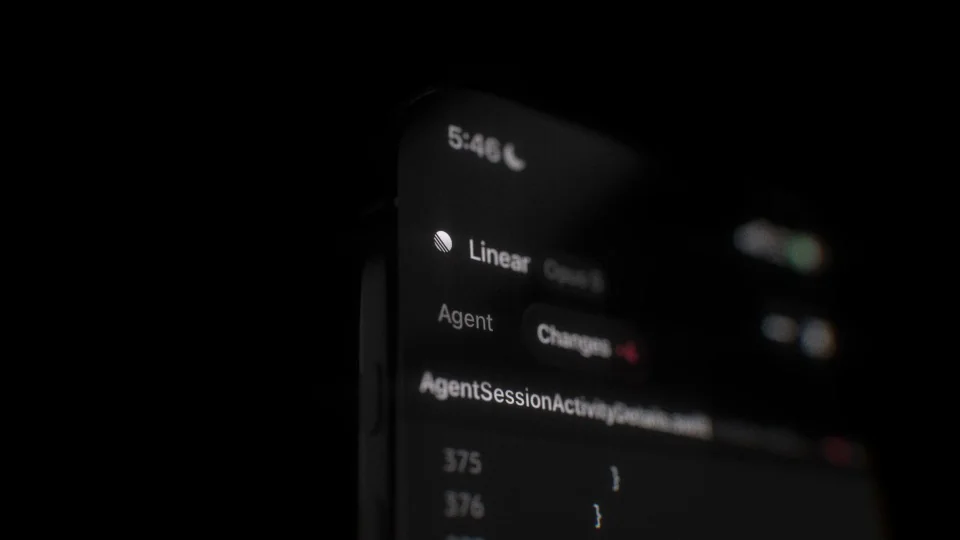
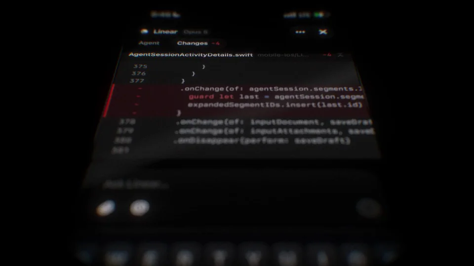
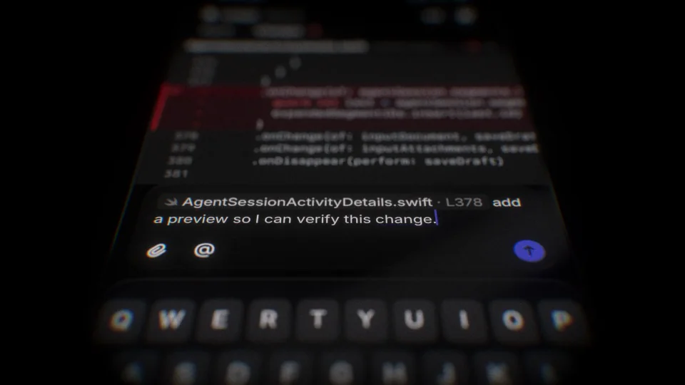
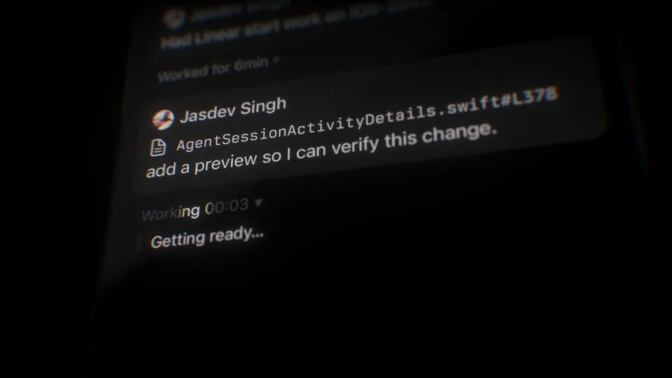
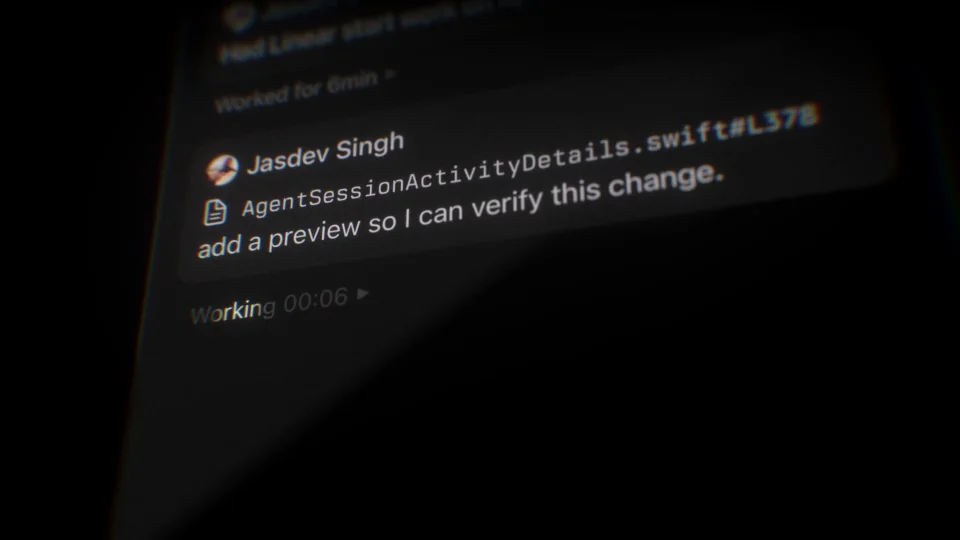
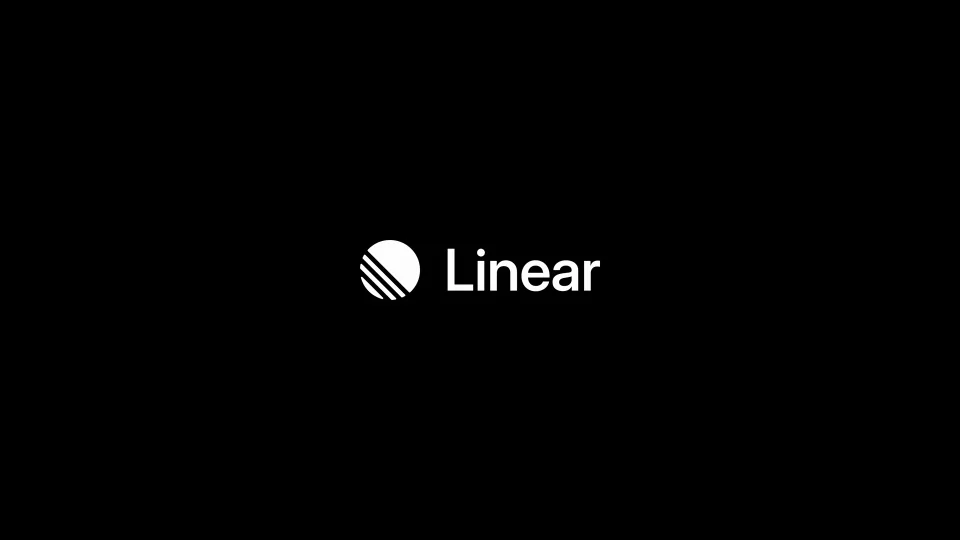

Linear / V255
Linear — coding sessions on mobile
在手机上保留代码上下文，并完成一次评论与回复。键盘出现和退出负责交代输入阶段的开始与结束。
构图与编排 可播放 · 可替换内容
整体编排规则示例
查看 HTML 源码
<!doctype html><html lang="zh-CN"><meta charset="utf-8"><meta name="viewport" content="width=device-width,initial-scale=1"><title>Linear — coding sessions on mobile · sequence</title><style>html,body{margin:0;width:100%;height:100%;overflow:hidden;background:#090a0c}canvas{display:block;width:100%;height:100%;object-fit:contain}</style><body data-mode="sequence"><canvas width="1000" height="600"></canvas><script src="data.js"></script><script src="common.js"></script><script src="scene.js"></script><script src="bridge.js"></script></body></html>画面元素手机窗口代码变化输入框软键盘处理状态回复
MOTION LANGUAGE
动作与构图
局部动作 · 构图规则
01
上方看代码，下方写评论
上方看代码，下方写评论规则示例
查看 HTML 源码
<!doctype html><html lang="zh-CN"><meta charset="utf-8"><meta name="viewport" content="width=device-width,initial-scale=1"><title>Linear — coding sessions on mobile · sequence</title><style>html,body{margin:0;width:100%;height:100%;overflow:hidden;background:#090a0c}canvas{display:block;width:100%;height:100%;object-fit:contain}</style><body data-mode="clip" data-start="0" data-end="11"><canvas width="1000" height="600"></canvas><script src="data.js"></script><script src="common.js"></script><script src="scene.js"></script><script src="bridge.js"></script></body></html>手机窗口居中，代码变化保留在上半部，输入框和键盘位于下方。键盘进入时调整可用高度，让目标代码与当前输入都留在可见区域。
02
提交后用处理状态接替键盘
提交后用处理状态接替键盘规则示例
查看 HTML 源码
<!doctype html><html lang="zh-CN"><meta charset="utf-8"><meta name="viewport" content="width=device-width,initial-scale=1"><title>Linear — coding sessions on mobile · sequence</title><style>html,body{margin:0;width:100%;height:100%;overflow:hidden;background:#090a0c}canvas{display:block;width:100%;height:100%;object-fit:contain}</style><body data-mode="clip" data-start="9" data-end="18"><canvas width="1000" height="600"></canvas><script src="data.js"></script><script src="common.js"></script><script src="scene.js"></script><script src="bridge.js"></script></body></html>评论提交后键盘退出，输入区切换为执行状态；回复晚于处理状态出现，并继续引用同一段代码上下文。不要通过整体换图跳过提交与等待。
03
窄屏信息要比桌面更精简
暗色手机界面、浅色无衬线正文与冷紫强调构成层次，代码采用等宽字。每行长度适应窄屏，键盘与输入框保持足够区分；手机外侧只留少量标题，不堆满额外说明。
04
换成移动端审阅或任务反馈
替换代码、评论和回复时保持一致问题。可以用于设计审阅或发布处理，但始终保留“上下文→输入→提交→处理→回复”的依赖；缩短片长时压缩等待，不删除状态。
SEQUENCE
段落与节奏
点击段落，定位到上方编排示意。






画面参考 · 离散静帧
KEEP THE RELATIONSHIPS
制作其他主题
- 可换移动端评审主题；保留上下文引用与回复依赖。
制作约束
手机窗口 / 代码变化 / 输入框 / 软键盘 / 处理状态 / 回复
- 代码上下文保持在上方，输入与软键盘位于下方；提交后键盘退出、处理状态接替。
- 回复显示晚于执行状态，不通过整体截图替换掩盖时序。